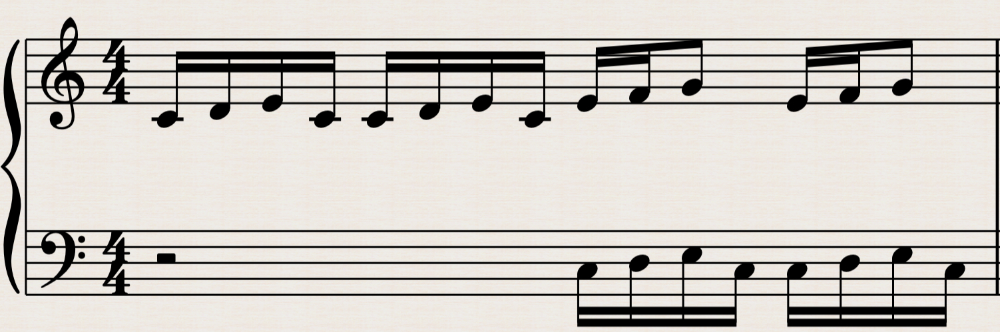

Compositions
Broeder Jacob Bach

Broeder Jacob Bach is a two-part invention inspired by the structure and style of Johann Sebastian Bach. Rooted in the familiar melody of "Frère Jacques," this composition transforms the traditional children's song into a sophisticated contrapuntal piece. It features intricate interplay between two voices, weaving the melody through variations, imitations, and harmonic exploration.
Bach Chorales

Bach Chorales is a collection of harmonized chorale settings inspired by Johann Sebastian Bach's timeless style. These compositions emphasize rich harmonic progressions, voice leading, and the elegant balance between melody and harmony that characterizes Bach's sacred works.